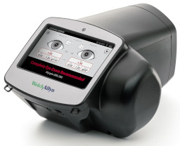

Notes:
- "High risk" Nevada zip codes for lead exposure include 89030, 89110, 89121, 89156, 89169
- Complete a maternal Edinburgh Postnatal Depression Scale (EPDS) at all well visits up to 2 months postpartum.
- For "Age-dependent" screeners, the specific ages required for the screener are found on that tab.
- If a PHQ2 scores 3 or more points, you must complete a PHQ9 (See "Depression Screening" tab)
- Use the Ages and Stages Questionnaire (ASQ) appropriate for the patient's age when completing the "Developmental Screening - MHS"
- For the Columbia Screener, always ask questions 1, 2, and 7.
-
Vision screening is done at the end of the technician hallway for children ≥ 5 years. For children aged 12 months to 5 years, use a photoscreener.

Photoscreener
|